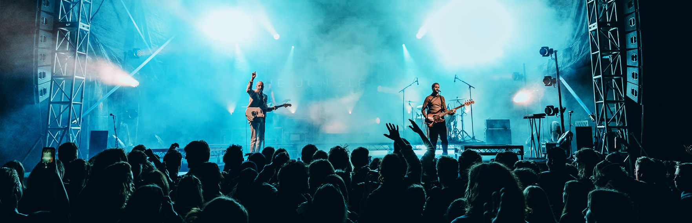

Vandemonian
Home
Upcoming Events
Past Shows
Contact
Sign Up

CAREERS
Need a change?
Are concerts, events & festivals your kind of thing?
Then we are too. Join us.
There are currently no open positions